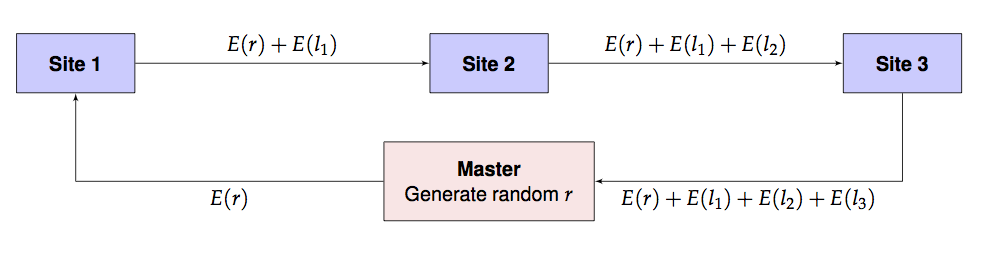

vignettes/homomorphing.Rmd
homomorphing.RmdWe present a toy example of a homomorphic computation involving maximum likelihood estimation.
Consider the following data motivated by an example from the
mle function in the stats4 R package: we wish
to estimate \(\lambda\), the Poisson
parameter \(\lambda\) for randomly
generated count data y below:
library(stats4)
set.seed(17822)
y <- rpois(n = 40, lambda=10)
# Easy one-dimensional MLE:
nLL <- function(lambda) -sum(stats::dpois(y, lambda, log = TRUE))
fit0 <- mle(nLL, start = list(lambda = 5), nobs = NROW(y))The function nLL is the negative log-likelihood of the
data and the function mle computes the maximum likelihood
estimate that can be printed out.
summary(fit0)## Maximum likelihood estimation
##
## Call:
## mle(minuslogl = nLL, start = list(lambda = 5), nobs = NROW(y))
##
## Coefficients:
## Estimate Std. Error
## lambda 9.175 0.4789311
##
## -2 log L: 199.5328
logLik(fit0)## 'log Lik.' -99.76641 (df=1)Assume now that the data y is distributed between three
sites, none of whom want to share actual data among each other or even
with a master computation process. They wish to keep their data secret
but are willing, together, to provide the sum of their local negative
log-likelihoods. They need to do this in a way so that the master
process will not be able to associate the contribution to the likelihood
from each site. To simulate this, let’s partition the data
y as follows.
y1 <- y[1:20]
y2 <- y[21:27]
y3 <- y[28:40]The overall likelihood function \(l(\lambda)\) for the entire data is therefore the sum of the likelihoods at each site: \(l(\lambda) = l_1(\lambda)+l_2(\lambda)+l_3(\lambda).\) How can this likelihood be computed while maintaining privacy?
Assuming that every site including the master has access to a
homomorphic computation library such as homomorpheR, the
likelihood can be computed in a privacy-preserving manner using the
following scheme. We use \(E(x)\) and
\(D(x)\) to denote the encrypted and
decrypted values of \(x\)
respectively.
This is pictorially shown below.

The above implementation assumes that the encryption and decryption can happen with real numbers which is not the actual situation. Instead, we use rational approximations using a large denominator, \(2^{256}\), say. In the future, of course, we need to build an actual library is built with rigorous algorithms guaranteeing precision and overflow/undeflow detection. For now, this is just an ad hoc implementation.
Also, since we are only using homomorphic additive properties, a partial homomorphic scheme such as the Paillier Encryption system will be sufficient for our computations.
We define a class to encapsulate our sites that will compute the
Poisson likelihood on site data given a parameter \(\lambda\). Note how the
addNLLAndForward method takes care to split the result into
an integer and fractional part while performing the arithmetic
operations. (The latter is approximated by a rational number.)
library(gmp)
library(homomorpheR)
Site <- R6::R6Class("Site",
private = list(
## name of the site
name = NA,
## only master has this, NA for workers
privkey = NA,
## local data
data = NA,
## The next site in the communication: NA for master
nextSite = NA,
## is this the master site?
iAmMaster = FALSE,
## intermediate result variable
intermediateResult = NA
),
public = list(
## Common denominator for approximate real arithmetic
den = NA,
## The public key; everyone has this
pubkey = NA,
initialize = function(name, data, den) {
private$name <- name
private$data <- data
self$den <- den
},
setPublicKey = function(pubkey) {
self$pubkey <- pubkey
},
setPrivateKey = function(privkey) {
private$privkey <- privkey
},
## Make me master
makeMeMaster = function() {
private$iAmMaster <- TRUE
},
## add neg log lik and forward to next site
addNLLAndForward = function(lambda, enc.offset) {
if (private$iAmMaster) {
## We are master, so don't forward
## Just store intermediate result and return
private$intermediateResult <- enc.offset
} else {
## We are workers, so add and forward
## add negative log likelihood and forward result to next site
## Note that offset is encrypted
nllValue <- self$nLL(lambda)
result.int <- floor(nllValue)
result.frac <- nllValue - result.int
result.fracnum <- as.bigq(numerator(as.bigq(result.frac) * self$den))
pubkey <- self$pubkey
enc.result.int <- pubkey$encrypt(result.int)
enc.result.fracnum <- pubkey$encrypt(result.fracnum)
result <- list(int = pubkey$add(enc.result.int, enc.offset$int),
frac = pubkey$add(enc.result.fracnum, enc.offset$frac))
private$nextSite$addNLLAndForward(lambda, enc.offset = result)
}
## Return a TRUE result for now.
TRUE
},
## Set the next site in the communication graph
setNextSite = function(nextSite) {
private$nextSite <- nextSite
},
## The negative log likelihood
nLL = function(lambda) {
if (private$iAmMaster) {
## We're master, so need to get result from sites
## 1. Generate a random offset and encrypt it
pubkey <- self$pubkey
offset <- list(int = random.bigz(nBits = 256),
frac = random.bigz(nBits = 256))
enc.offset <- list(int = pubkey$encrypt(offset$int),
frac = pubkey$encrypt(offset$frac))
## 2. Send off to next site
throwaway <- private$nextSite$addNLLAndForward(lambda, enc.offset)
## 3. When the call returns, the result will be in
## the field intermediateResult, so decrypt that.
sum <- private$intermediateResult
privkey <- private$privkey
intResult <- as.double(privkey$decrypt(sum$int) - offset$int)
fracResult <- as.double(as.bigq(privkey$decrypt(sum$frac) - offset$frac) / den)
intResult + fracResult
} else {
## We're worker, so compute local nLL
-sum(stats::dpois(private$data, lambda, log = TRUE))
}
})
)We are now ready to use our sites in the computation.
We also choose a denominator for all our rational approximations.
keys <- PaillierKeyPair$new(1024) ## Generate new public and private key.
den <- gmp::as.bigq(2)^256 #Our denominator for rational approximations
site1 <- Site$new(name = "Site 1", data = y1, den = den)
site2 <- Site$new(name = "Site 2", data = y2, den = den)
site3 <- Site$new(name = "Site 3", data = y3, den = den)The master process is also a site but has no data. So has to be thus designated.
## Master has no data!
master <- Site$new(name = "Master", data = c(), den = den)
master$makeMeMaster()
site1$setPublicKey(keys$pubkey)
site2$setPublicKey(keys$pubkey)
site3$setPublicKey(keys$pubkey)
master$setPublicKey(keys$pubkey)Only master has private key for decryption.
master$setPrivateKey(keys$getPrivateKey())Master will always send to the first site, and then the others have to forward results in turn with the last site returning to the master.
master$setNextSite(site1)
site1$setNextSite(site2)
site2$setNextSite(site3)
site3$setNextSite(master)Print the summary.
summary(fit1)## Maximum likelihood estimation
##
## Call:
## mle(minuslogl = master$nLL, start = list(lambda = 5))
##
## Coefficients:
## Estimate Std. Error
## lambda 9.175 0.4789311
##
## -2 log L: 199.5328
logLik(fit1)## 'log Lik.' -99.76641 (df=1)The results should be the same as above.
distcomp and opencpu
One can imagine these sort of computations being constructed within the framework described the R package distcomp where the sites are opencpu servers and there is a master process executing the computation. Much work remains to be done to make this work in a seamless manner; however, as this proof-of-concept example shows, the technical hurdles are quite surmountable.